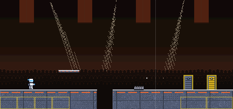
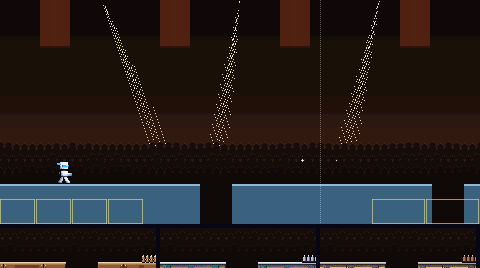
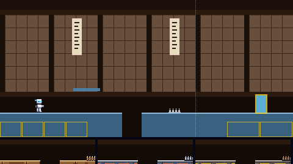
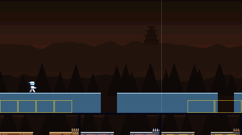
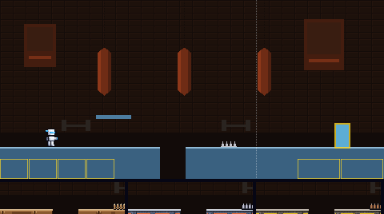
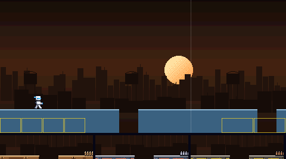
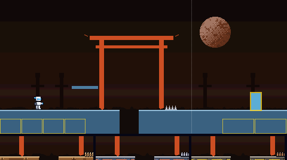
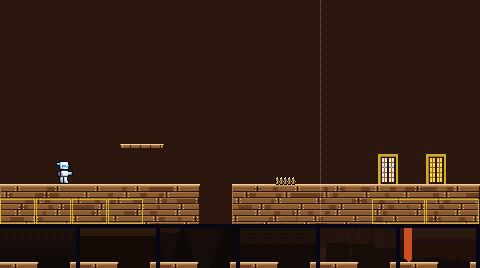
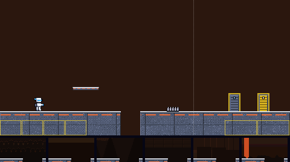
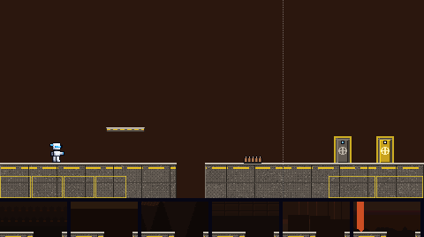

The way to Strike Man's door. Six backdrops, and three materials (each a floor, platform, spikes, boss door and exit door), all built from his colours. Batch 1 of 3.
Picked by the owner on 5 Nov 2026, in their words: "1b but ensure the arena crowd is animated"
Done: the crowd now jumps and cheers, each person on their own beat and some with their arms up, while camera flashes go off and the spotlights sweep. A haze of light behind the crowd and a rim of light on their heads make them stand out from the dark. The crowd also scrolls a little faster than the back wall, so the backdrop reads as layered. Material B, ring canvas, is as offered. The other variants are kept as they were offered. Batch 1 is in the game.
Backdrop 1 behind material B, with the player standing still so the crowd shows. The boss door is on the left, the exit door on the right. This picture moves.

Each is shown behind today's plain pieces, so only the backdrop changes. The strip under it is its pit edge with floors A, B and C in front. The three marked MOVING scroll in layers, the far ones slower; their pictures move.






Each shows the floor with a pit, a platform, spikes, the boss door (left) and the exit door (right), in front of today's flat colour. The strip under it is its pit edge against backdrops 1 to 6. The contrast numbers are the worst against any of the six; the game asks at least 2 for the ground, 4.5 for its lit edge and 4.5 for the white player on it.


